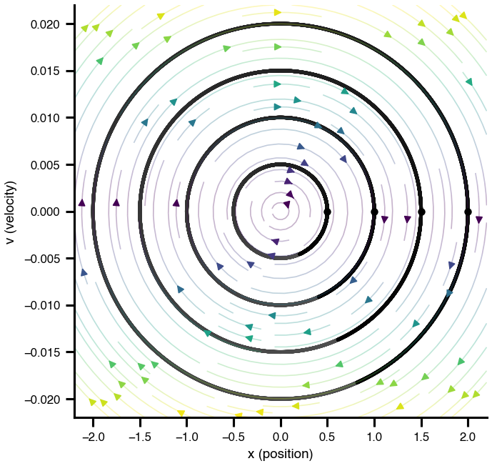
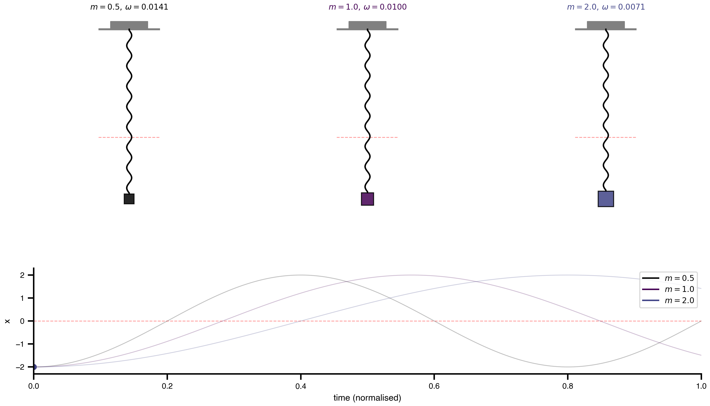
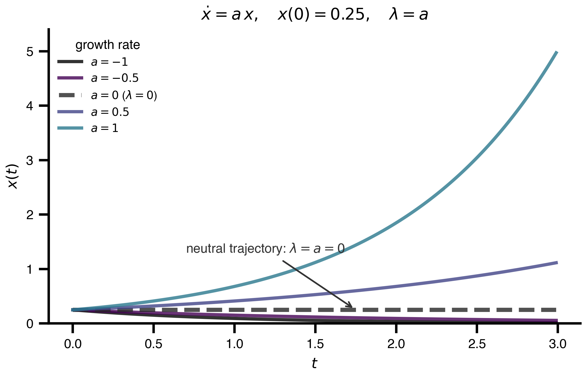
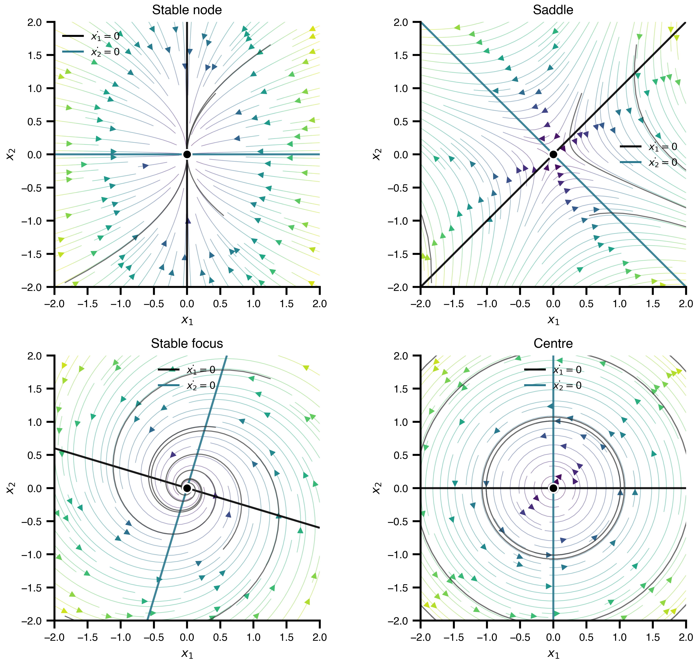

Towards translational and mechanistic whole-brain simulations with The Virtual Brain
Track 4 Workshop — FAIR Brain Data Science Bootcamp
May 12, 2026
Welcome
- Two-day hands-on workshop on personalized whole-brain modeling with TVB
- Day 1: structured sessions
- Day 2: mini hackathon — bring your own questions / data
- Useful links:
Schedule
Day 1
Block 1 - 09:00-12:00:
1. Intro to Brain Network Modelling
2. Defining a FAIR brain network model
3. Dynamical perspective
4. Setup & First examples
Block 2 - 13:00-15:00:
5. Bifurcation Theory
6. Parameter exploration & inference
Block 3 - 15:30-17:30:
7. Stimulating the brain
Day 2
Block 1 - 09:00-11:30:
Mini hackathon - Bring your own data / research question
Block 2 - 12:00-13:30:
Mini hackathon - Bring your own data / research question
1. Intro to Brain Network Modelling
- TODO: motivation for whole-brain network modeling
- TODO: brief historical arc of TVB
Basic ideas and history


Mathematical framework
\[ dS_i = \left[f_d(S_i, \theta^d, C_i, I_i) \right]dt + g(S_i, \theta^g)\, dW_i \]
State Evolution
- \(S_i\) - state variables at node \(i\)
- \(f_d\) - dynamics function with parameters \(\theta^d\)
- \(C_i\) - coupling input from connected nodes
- \(I_i\) - external input (stimulation, driving signals)
- \(g\) - noise diffusion coefficient with parameters \(\theta^g\)
- \(dW_i\) - Wiener process (stochastic fluctuations)
Dynamical Systems
A mass \(m\) on a spring with stiffness \(k\).
Perpetual oscillation at \(\omega = \sqrt{k/m}\).
State Equations: \[ \dot{x} = v \] \[ \dot{v} = - \frac{k}{m}*x \]
State Variables
| Variable | Initial Value | Unit | Description |
|---|---|---|---|
| \(x\) | 2.0 | \(\mathrm{m}\) | Displacement from equilibrium |
| \(v\) | 0.0 | \(\frac{\mathrm{m}}{\mathrm{s}}\) | Velocity |
Parameters
| Parameter | Value | Unit | Description |
|---|---|---|---|
| \(k\) | 0.0001 | \(\frac{\mathrm{N}}{\mathrm{m}}\) | Spring stiffness constant |
| \(m\) | 1.0 | \(\mathrm{kg}\) | Mass of the oscillating body |


Initial Conditions
\[ \dot{x} = v \] \[ \dot{v} = - \frac{k}{m}*x \]


Phase Space

Parameters — Mass


Towards Realism — Damping & Load


Mean field models & Neural Masses
- TODO: notebook link
- TODO: pick a model, inspect parameters, simulate
- TODO: neural mass / mean-field formulation
Coupled network dynamics
- TODO: nodes, coupling, delays, noise
- TODO: connectome loading
- TODO: global coupling sweep
\[ C_i = f_c^{\text{post}}\Big(\sum_j A_{ij}\, f_c^{\text{pre}}(S_i, S_j(t-\tau_{ij}), \theta^c), S_i, \theta^c\Big) \]
Coupling
- \(f_c^{\text{pre}}\) - pre-aggregation transformation
- \(A_{ij}\) - structural connectivity weight (\(j \to i\))
- \(\tau_{ij}\) - transmission delay (tract length / conduction speed)
- \(f_c^{\text{post}}\) - post-aggregation transformation
- \(\theta^c\) - coupling parameters
2. Defining a FAIR brain network model
Why FAIR? TVB-O in one slide
- TODO: ontology-driven model specification (Martin et al. 2025)
- TODO: metadata + automated code generation
Applications in basic research
- TODO: representative findings
- TODO: links to (Schirner, Deco, and Ritter 2023; Koller, Schirner, and Ritter 2024; Kashyap et al. 2025)
Clinical applications
- TODO: translational use-cases
- TODO: virtual epileptic / Alzheimer / stroke patient examples
3. Dynamical perspective
How to analyse a brain system

Time series \(x(t)\) at fixed \((a, x_0)\)
Phase plane flow geometry at fixed \(a\)
Bifurcation diagram regimes as \(a\) varies
Linear stability
\[ \dot x = a\,x \quad\Rightarrow\quad x(t) = x_0\,e^{a t} \]
- \(\lambda=a\): growth rate
- \(a < 0\): decay
- \(a = 0\): marginal
- \(a > 0\): growth
- change point: \(\lambda=a=0\)

2D portraits

Same local rule: arrows define the flow; trajectories reveal attraction, repulsion, rotation and separatrices.
Regime-change building blocks

Top: equilibria as \(a\) varies. Bottom: local flow \(\dot x=f(x)\) at the dotted parameter slice.
Hopf: birth of an oscillation
\[ \dot z = (a + i\omega)z - |z|^2z, \qquad r_{\mathrm{cycle}} = \sqrt a \]

fixed point loses stability \(\Rightarrow\) stable oscillation appears
Numerical continuation
\[ F(x, a)=0, \qquad (x,a)=(x(s),a(s)) \]

- follow branches through folds
- detect folds and Hopf points
- switch to periodic orbits
Generic2dOscillator: regimes over input \(I\)

resting branch | oscillatory window | folds and Hopf points
3.1 Bifurcation analysis: hands-on
- Notebook:
notebooks/03_bifurcation_analysis.qmd - Sweep input \(I\) in a TVB neural mass model
- Continue fixed points and periodic orbits
- Read the diagram as a map of regimes
4. Parameter exploration and inference
Models as computational hypotheses
A brain network model is a hypothesis with knobs. Picking knob values is how we test the hypothesis against data.
\[ \theta \;\longrightarrow\; \text{simulator} \;\longrightarrow\; \hat{y}(\theta) \;\longrightarrow\; \mathcal{L}\big(\hat{y}(\theta),\, y_{\text{obs}}\big) \]
- \(\theta\) — model parameters (the knobs)
- \(\hat{y}(\theta)\) — simulated observable (FC, power spectrum, BOLD …)
- \(y_{\text{obs}}\) — empirical observable
- \(\mathcal{L}\) — loss / discrepancy
Inference = which \(\theta\) are consistent with the data? (Pille et al. 2025)
The shape of the problem
Optimization over a parameter landscape \(\mathcal{L}(\theta)\).
Running example for this block: fit global coupling \(G\) so the simulated FC matches an empirical FC.
- one parameter → easy to picture
- but every method we’ll see scales (or doesn’t) to many
TODO: 1D / 2D loss-surface plot for \(G\) vs FC fit
Why this is hard for brain models
- Expensive simulator — seconds to minutes per run
- High-dimensional — when parameters become regional (\(\times N\) nodes)
- Non-smooth dynamics — chaos, stochasticity, stiffness
- Bumpy observables — FC, FCD, PSD are summary statistics
Every method below is a bet about which of these difficulties dominates.
Grid search — map the whole landscape
- Same idea as the bifurcation diagrams from §3
- Wins when: \(\le 2\)–\(3\) parameters, you want to see the landscape
- Cost grows as \(N^d\) — unusable beyond a handful of dimensions
TODO: grid scan of \(G\) vs FC loss; mark the minimum
Random search — the surprising upgrade
In more than 2–3 dimensions, random search beats grid for the same budget.
Why? Real loss surfaces have low effective dimensionality — most parameters barely matter. Grid spends its budget evenly across all axes; random samples every axis at every trial (Bergstra and Bengio 2012).
TODO: axis-projection figure (Bergstra & Bengio 2012, Fig. 1 style)
Take-away. If you don’t know which parameters matter, don’t grid.
Quasi-random — better coverage, same idea
- Latin Hypercube and Sobol sequences: low-discrepancy samples
- Random’s robustness without the clumping
- Drop-in replacement for the sampler in your search loop
Evolutionary / CMA-ES — adaptive, no gradients
- Maintains a population of \(\theta\) and updates a covariance estimate to bias future samples toward good regions
- Wins when: ~10–50 parameters, no gradients available, moderate budget
- Naturally parallel — every generation is a
vmapover the population
Gradient descent — the regime-changer
\[ \theta_{t+1} \;=\; \theta_t - \eta \,\nabla_\theta\, \mathcal{L}(\theta_t) \]
- The only method that scales to regional / per-node parameter vectors (hundreds–thousands of knobs)
- Local: needs a reasonable starting point
- Requires \(\nabla_\theta \mathcal{L}\) — that’s where JAX comes in (next)
Bayesian inference — when you want a posterior
A point estimate \(\theta^\star\) tells you one good fit. A posterior \(p(\theta \mid y) \propto p(y \mid \theta)\, p(\theta)\) tells you how much you know — and lets you fold in priors (e.g. tau PET, anatomy).
What you get out: uncertainty over predictions, identifiability, model comparison.
One model, many inference algorithms. Define the simulator + priors once; pick how to approximate the posterior:
- MCMC (HMC / NUTS) — asymptotically exact samples; uses gradients to navigate the posterior efficiently. Slow but accurate.
- Variational inference (SVI) — fit a tractable family \(q_\phi(\theta)\) to the posterior by gradient descent on the ELBO. Fast, approximate; scales to high-dim regional parameters.
- Simulation-based inference (NPE / NLE) — train a neural density estimator on simulated \((\theta, y)\) pairs. No gradients through the simulator needed → works when AD breaks (chaos, black-box code). Amortized: pay the simulation budget once, then query the posterior for any new observation almost instantly.
- Laplace / SWAG — cheap Gaussian approximation around the optimum.
TODO: posterior plot for \(G\) alongside the point estimate (HMC vs SVI)
Choosing a method — cheat sheet
| method | scales to | cost (forward sims) | what you get |
|---|---|---|---|
| Grid | \(\le 3\) params | \(N^d\) | full landscape |
| Random / Sobol | \(\sim 20\) | \(10^2\)–\(10^3\) | landscape sketch |
| CMA-ES / GA | \(\sim 50\) | \(10^3\)–\(10^4\) | local optimum |
| Gradient descent | \(10^4\)+ (regional) | \(10^2\)–\(10^3\) | local optimum |
| SVI | \(10^4\)+ | \(10^2\)–\(10^3\) | approximate posterior |
| HMC / NUTS | scales with \(d\) — simulator-bound | \(10^4\)–\(10^6\) | (near-)exact posterior |
| SBI (NPE / NLE) | \(\sim 10^2\), simulator-bound | \(10^4\)–\(10^6\) upfront, amortized | amortized approximate posterior |
Cost numbers assume reverse-mode AD makes a gradient step ≈ one forward sim (next slide). Bayesian rows sit at the expensive end — a posterior is worth roughly a thousand point estimates’ worth of compute.
Parallelism via vmap
- One simulator, batched over parameter sets, fused into a single GPU pass
- Random search and population methods become almost free on top of one forward simulation
- Same model code, no manual batching
TODO: wall-clock plot — sequential vs vmap’d ensemble
Reverse-mode autodiff — the headline result
For a scalar loss \(\mathcal{L}:\mathbb{R}^d \to \mathbb{R}\):
\[ \text{cost}\!\left(\nabla_\theta \mathcal{L}\right) \;\approx\; c \cdot \text{cost}(\mathcal{L}) \qquad\text{independent of } d \]
- Finite differences: cost \(\sim d \times\) forward → infeasible at regional scale
- Forward-mode AD: same scaling as finite differences
- Reverse-mode AD: cost \(\sim\) one forward pass, regardless of \(d\)
This is the reason per-region fits became tractable.
Composability — one simulator, four uses
| transform | what it gives | enables |
|---|---|---|
jit |
compiled XLA | speed |
vmap |
batching | random search, CMA-ES |
grad |
gradients | gradient descent, SVI |
| probabilistic | priors + likelihood | Bayesian inference (HMC, NUTS, SVI — NumPyro / BlackJAX) |
You write the model once.
Chaos eats your gradient
Sensitivity to initial conditions \(\Rightarrow\) \(\|\nabla_\theta \mathcal{L}\|\) explodes with integration length.
Not a bug in autodiff — the dynamics are telling you the loss is non-smooth at fine scales.
Mitigations
- integrate over shorter windows
- use smoothed observables (FC, power spectra) instead of raw traces
- multiple shooting
- gradient clipping
Other failure modes
- Stochasticity — gradients through \(dW\) need the reparameterization trick or score-function estimators
- Bifurcations near the optimum — genuine discontinuities in the loss as fixed points appear or disappear → gradient descent gets stuck on the wrong side
- Stiffness / long transients — numerical noise compounds through the unrolled trajectory
Take-away. Gradients are powerful, not universal. Read the landscape (§3) before you trust the slope.
When gradients are unsalvageable: simulation-based inference (NPE / NLE) treats the simulator as a black box — see Bayesian slide.
The default tvboptim recipe
- Bifurcation map (§3) → pick a regime of interest
- Coarse random / Sobol search within that regime → find a basin
- Gradient descent from the basin → polish to a local optimum
- Bayesian inference (HMC, SVI, or SBI when gradients break) from the optimum → posterior + uncertainty
Each step uses the output of the previous as a warm start.
TODO: pipeline diagram — same loss surface, four overlays
Mini-demo — pipeline on the running example
TODO: live (or pre-rendered) walkthrough running the full chain on \(G\) vs FC. Lands the synthesis just before the hands-on.
Use-case A — Alzheimer’s disease
- TODO: tau PET / amyloid map → prior on regional parameters
- TODO: high-dim (regional) fit → gradient-descent territory
- TODO: healthy vs patient simulation, refs (Schirner, Deco, and Ritter 2023; Stefanovski et al. 2019)
Use-case B — homogeneous vs. heterogeneous fitting
- TODO: same model, same data — fit one \(G\) vs per-region \(G_i\)
- TODO: low-dim vs high-dim head-to-head → why the toolbox matters
- TODO: TVBase frequency gradient as target (Pille et al. 2025)
5. Stimulating the brain
Visual and TMS-evoked potentials (Jansen–Rit)
- TODO: stimulation primitives in TVB
- TODO: VEP / TEP example
Day 2 — Mini Hackathon
Format
- TODO: pitch your question (5 min each)
- TODO: form small groups
- TODO: checkpoint + wrap-up times
Bring your own…
- TODO: data formats we can support
- TODO: EBRAINS / local setup reminder
Wrap-up
Take-aways
- TODO: what to remember from Day 1
- TODO: where to go next
Thanks & contact
- TODO: contact info
- TODO: feedback link
 |
 |
 |
|---|
References
© Pille, Martin, Stefanovski, Charité Unviersity Medicine Berlin